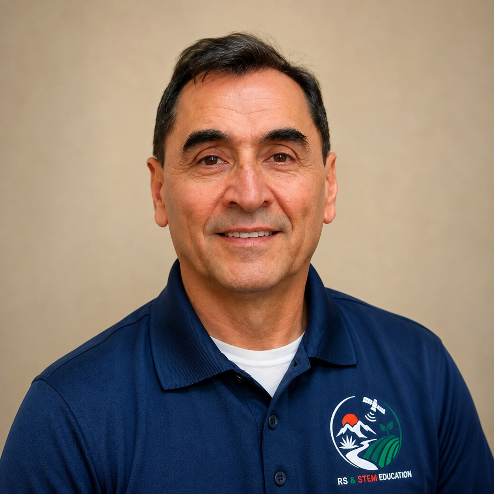
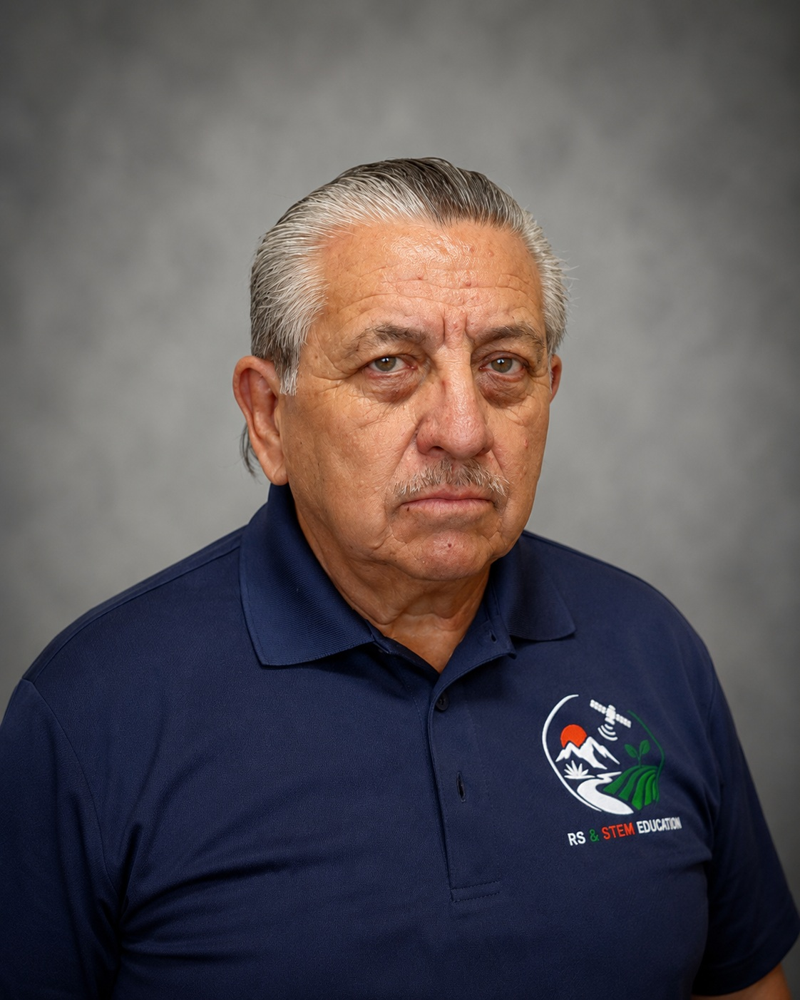
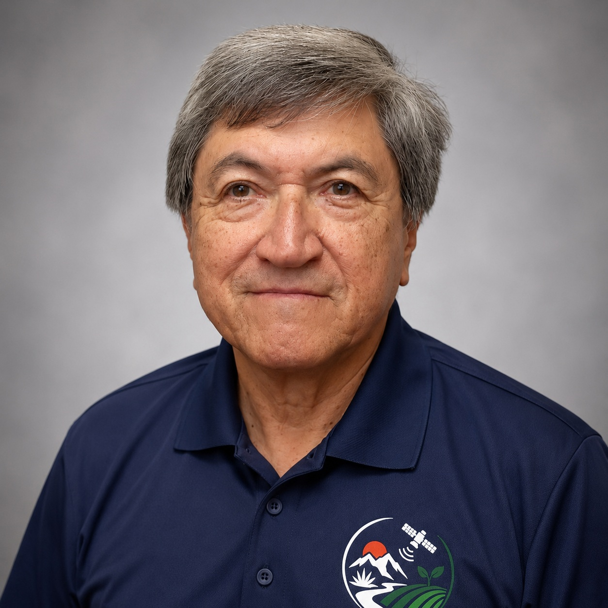

Dr. Hector Erives-Contreras
Faculty Investigator
The University of Texas at El Paso
Electrical and computer engineering faculty member contributing expertise in remote sensing, data analysis, and STEM education.
The RS & STEM Education project brings together faculty and students from UTEP and UACH with expertise and interests in remote sensing, engineering, agricultural applications, image processing, and STEM education.

Faculty Investigator
The University of Texas at El Paso
Electrical and computer engineering faculty member contributing expertise in remote sensing, data analysis, and STEM education.

Faculty Investigator
Universidad Autónoma de Chihuahua
Faculty collaborator supporting agricultural remote sensing, field activities, precision-agriculture applications, and student research and training.

Faculty Collaborator
The University of Texas at El PaAso
Faculty collaborator supporting image processing and student research and training.

Undergraduate Researcher
The University of Texas at El Paso
Participates in remote-sensing data analysis, image processing, programming, field measurements, and development of educational activities and laboratory exercises.

Graduate Researcher
Universidad Autónoma de Chihuahua
Participates in agricultural field activities, remote-sensing measurements, image analysis, and the development and evaluation of educational and research activities.
Faculty and students work together on satellite and UAV data analysis, field-based measurements, sensor evaluation, agricultural monitoring, image processing, and the development of educational materials.